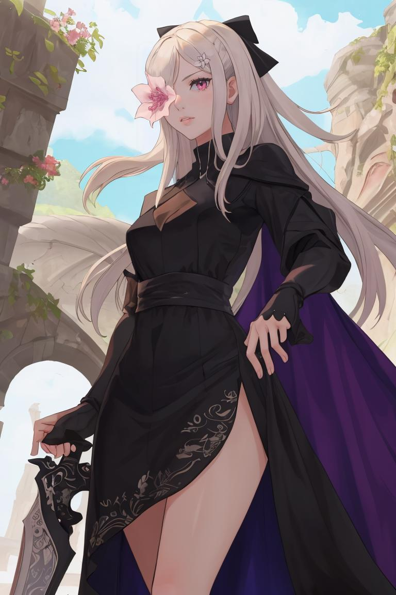
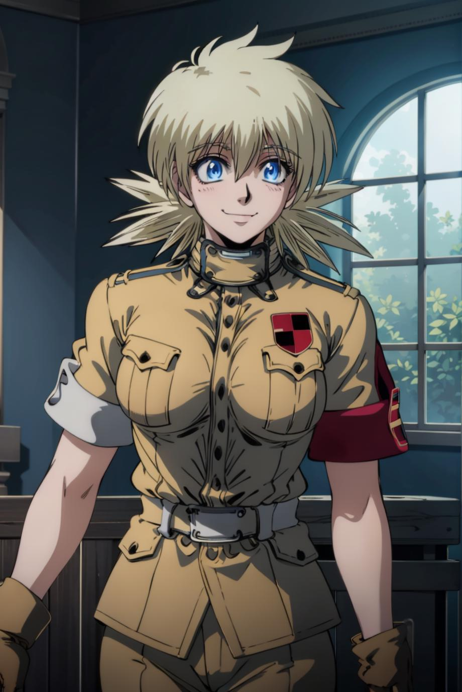
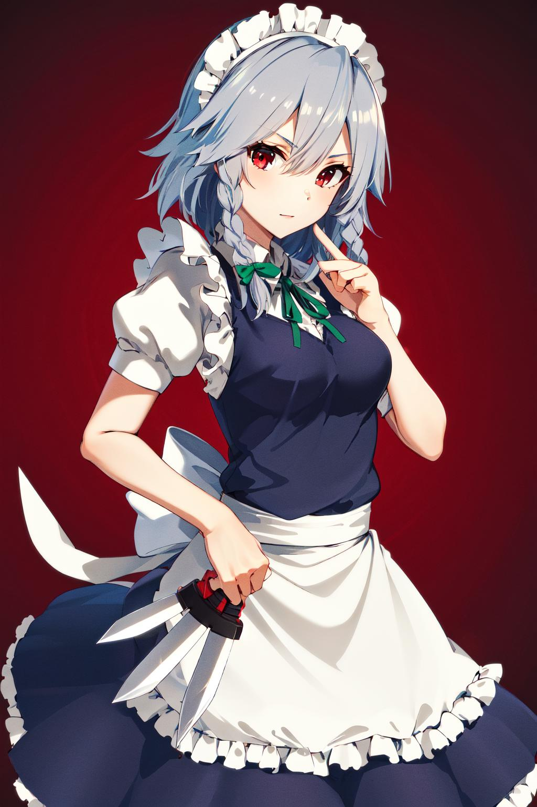
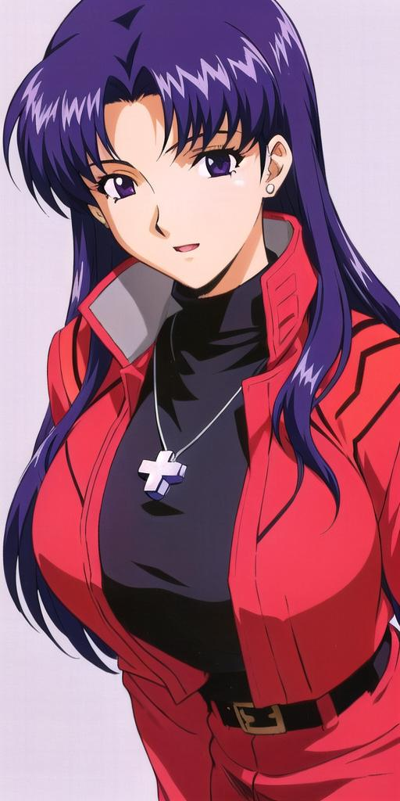

Yor Forger, the dual-faced Berlint City Hall clerk and covert Garden assassin "Thorn Princess," navigates a delicate balance between ordinary life and deadly intrigue. Her beauty and efficiency create a captivating duality, embodying a character torn between maternal instincts and a hidden underworld.

Zero, the relentless protagonist of Drakengard, navigates a world tainted by the malevolent flower, confronting harrowing challenges that go beyond physical pain. Her journey unfolds as a symphony of sorrow, depicting a soul weighed down by tragic choices, unrelenting darkness, and a haunting quest for retribution, carving a narrative that resonates with profound melancholy.
Seras Victoria, the formidable vampire from Hellsing, embarks on a journey of blood and battles. Her transformation from human to vampire marks a pivotal point in a narrative filled with gothic horror, supernatural struggles, and a quest for identity.
Sakuya Izayoi, the enigmatic chief maid of the Scarlet Devil Mansion in Touhou, moves through time with deadly elegance. Her intricate dance of knives paints a picture of servitude tainted by a haunting past, as she weaves a tapestry of manipulation, blood, and the echoes of forgotten moments.
Misato Katsuragi, the complex and tormented character from Evangelion, navigates a world on the brink of apocalypse. Her role as a NERV officer conceals layers of inner turmoil, haunted by personal demons and a fragile grasp on normalcy. In the shadows of giant mechs, Misato's journey unfolds as a symphony of chaos, blending duty and despair in a post-apocalyptic landscape.
